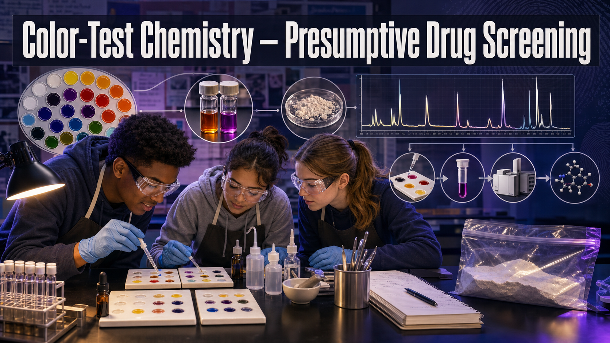

Color-Test Chemistry — Presumptive Drug Screening¶
Welcome, Investigators!

A patrol officer finds a small bag of white powder and adds a drop of reagent. It flashes purple. Case closed? Not even close. Today you'll run color tests of your own, watch them point you in a direction — and discover exactly why a color can suggest an answer but never confirm one. Follow the evidence!
The Case¶
A sealed evidence bag arrives at your bench marked "Unknown white powder, recovered from vehicle." It could be almost anything. Before an expensive instrument gets involved, the lab runs quick, cheap presumptive color tests to narrow the field.
Every powder in this lab is a safe simulant — baking soda, powdered sugar, cornstarch, or chalk. There are no controlled substances anywhere in this room. Your household reagents (a red-cabbage pH indicator and an iodine starch test) stand in for the real Marquis and Scott reagents a crime lab uses. Your task: test the unknown, build a color key, make a presumptive call — and then confirm it the only way a court will accept, with GC-MS.
Learning Objectives¶
By the end of this investigation you will be able to:
- Perform presumptive color spot tests on unknown powders using safe indicators.
- Construct a color key that maps each observed reaction to a candidate substance.
- Distinguish a presumptive result from a confirmatory identification.
- Justify why GC-MS confirmation is required before a courtroom conclusion.
Quick Facts¶
| Lab type | 🔀 Combination (bench spot tests + simulated GC-MS) |
| Group size | 2–3 investigators |
| Time | 45–55 minutes |
| Cost | ≈ $12 per group (consumables) |
| Ties to | Ch 9 — Marquis Reagent Test, Scott Reagent Test, Duquenois-Levine Test, GC-MS Analysis, Gas Chromatography, Mass Spectrometry |
Materials¶
Per group (≈ $12):
- 4–5 harmless white "unknown" powders: baking soda, powdered sugar, cornstarch, chalk (crushed), and one labeled UNKNOWN
- Red-cabbage indicator solution (boil chopped red cabbage, keep the purple liquid) or universal-indicator solution
- Tincture of iodine (from a first-aid kit) for the starch test
- White vinegar in a dropper (the fizz test)
- A white spot plate, ice-cube tray, or white ceramic tile
- Disposable pipettes or droppers; small spatulas or coffee stirrers
- A blank color-key card to fill in
- PPE: splash goggles and nitrile gloves for every investigator
Simulants Only — and Goggles On

This is a simulant lab: every powder is a harmless kitchen item and no real controlled substances are ever used or allowed. Iodine stains skin and clothing and must never be swallowed. Wear goggles and gloves, keep droppers separate to avoid cross-contamination, and never taste a sample — real analysts never do, and neither do you.
Background: Presumptive vs. Confirmatory¶
A presumptive test is fast, cheap, and done in the field. A reagent reacts with a class of chemicals and produces a color — the Marquis reagent turns purple-to-black with many opioids, the Scott test turns blue with cocaine. A color narrows the possibilities, but many unrelated substances can trigger the same color. That's why a positive presumptive result means "worth investigating further," never "identified."
A confirmatory test actually names the molecule. The gold standard is GC-MS — gas chromatography–mass spectrometry. The gas chromatograph first separates a mixture in time: each compound travels through a long column at its own speed and exits at a characteristic retention time. The mass spectrometer then shatters each compound into fragments and records their masses, producing a fragmentation pattern as unique as a fingerprint. Matched against a reference library, GC-MS turns "probably" into "identified."
Before you test powders, it helps to know why toxicologists care what a substance is at all — because once it's in a body, chemistry takes over.
Explore: What the Body Does With a Drug¶
ADME Pathway Interactive Flow Diagram MicroSim
Type: microsim
sim-id: adme-pathway
Library: p5.js
Status: Specified
Learning Objective: Trace a drug's Absorption, Distribution, Metabolism, and Elimination and relate the route of administration to the blood-concentration curve (Bloom Level 2 — Understand).
Pick a route of administration and watch the blood-concentration curve rise and fall. This is the pharmacology backdrop to your case: identifying a powder is step one, but a toxicologist ultimately cares how it moves through — and out of — a body.
Explore: Confirm the Identity with GC-MS¶
Take your presumptive call to the confirmatory instrument: overlay a reference candidate on the unknown and see whether both the retention time and the fragmentation pattern truly match.
GC-MS Peak-Match Confirmation Interactive MicroSim
Type: microsim
sim-id: gcms-peak-match
Library: p5.js
Status: Implemented
Learning Objective: Confirm the identity of an unknown by matching its retention time and mass-spectrum fragmentation pattern to a reference library (Bloom Level 3 — Apply).
Procedure¶
Part 1 — Build the color key with knowns.
- Put a small scoop of each known powder (baking soda, powdered sugar, cornstarch, chalk) into its own well on the spot plate. Label each well.
- Add a drop of red-cabbage indicator to each. Record the color. (Bases like baking soda push it blue-green; neutral sugars and starch stay purple.)
- In a fresh set of wells, add a drop of iodine to each known. Record the color. (Starch — cornstarch — flashes blue-black; the others don't.)
- In a third set, add a drop of vinegar to each known. Record any fizz. (Carbonates like baking soda and chalk bubble CO₂; sugar and starch don't.)
- Fill in your color-key card: one row per known, one column per test.
Part 2 — Test the unknown.
- Run the same three tests on the powder labeled UNKNOWN, using clean droppers each time. Record every result.
- Compare the unknown's row to your color key and make a presumptive call: which known does it most resemble?
Part 3 — Confirm with GC-MS.
- Take your presumptive call to the GC-MS peak-match step (the widget above, or the paper reference library). Find the reference whose retention time and fragmentation pattern both match the unknown.
- State your confirmed identification only if both the retention time and the mass spectrum agree. If the presumptive call and the GC-MS disagree, the GC-MS wins — and explain why in your report.
Data Collection¶
Fill in one row per powder.
| Powder | Red-cabbage color | Iodine (starch) result | Vinegar fizz? | Presumptive ID |
|---|---|---|---|---|
| Baking soda | — | |||
| Powdered sugar | — | |||
| Cornstarch | — | |||
| Chalk | — | |||
| UNKNOWN |
| Presumptive call for UNKNOWN | GC-MS retention-time match? | GC-MS spectrum match? | Confirmed ID |
|---|---|---|---|
Analysis Questions¶
- Which combination of tests was needed to tell your four knowns apart? Was any single test enough on its own? Explain why not.
- Two different powders gave you the same result on one of the tests. Use that to explain, in your own words, why a color test is presumptive and not an identification.
- Your household reagents stand in for the real Marquis and Scott tests. Name one way a false positive could fool a real field color test, and say what an analyst should do about it.
- Explain how GC-MS uses two independent pieces of information (retention time and fragmentation pattern) to confirm an identity. Why is matching both stronger than matching either one alone?
- A prosecutor asks you to testify that the powder "tested positive, so it is definitely the drug." Rewrite that claim in scientifically honest language a court could accept.
Deliverable¶
Turn in your completed color-key card, the data tables, and a short Analyst's Report that (1) states your presumptive call and the tests that support it, (2) states your GC-MS-confirmed identification, and (3) explains in two or three sentences why the confirmation step was necessary before you could name the substance.
What Does the Data Tell Us?

A color test is a flashlight, not a verdict — it shows you where to look. Real crime labs have sent innocent people through the system on a color test alone. The whole point of confirmation is that a molecule's fragmentation pattern doesn't lie the way a color can. Test, then confirm.
Extension Challenge: Design a Decoy
Field color tests are famous for false positives — everyday substances that mimic a drug's color reaction. Design a fifth "unknown" that would fool one of your three tests but fail the others, and predict its full row on the color key. Then explain how the GC-MS step would still catch it.
Teacher Notes¶
Setup, timing, and grading (click to expand)
- Prep: Pre-portion the four knowns into labeled cups and hand each group a sealed UNKNOWN that is secretly one of the four (rotate which one per group). Red-cabbage indicator keeps ~1 week refrigerated; make it the day before.
- Chemistry check: Baking soda turns red cabbage blue-green and fizzes with vinegar; chalk fizzes but changes color less (low solubility); cornstarch is the only strong iodine positive; powdered sugar is largely inert (a faint iodine tinge from anti-caking starch is a great discussion point). This gives a clean three-test separation.
- The confirmation step is the lesson. Until the
gcms-peak-matchwidget ships, provide a one-page paper reference library (labeled chromatogram + spectrum per known) so students still practice matching both features. - Safety: Goggles and gloves throughout; iodine stains — protect surfaces and clothing. Reinforce out loud that this is a simulant lab.
- Assessment focus: Reward students who correctly separate presumptive from confirmatory language and who let the GC-MS override a wrong presumptive call.
Case Closed — For Now

You built a color key, made a smart presumptive call, and then did the thing that separates a lab from a guess: you confirmed it. That discipline — never trusting a color alone — is what keeps forensic toxicology honest. Sharp work, investigators. Follow the evidence!